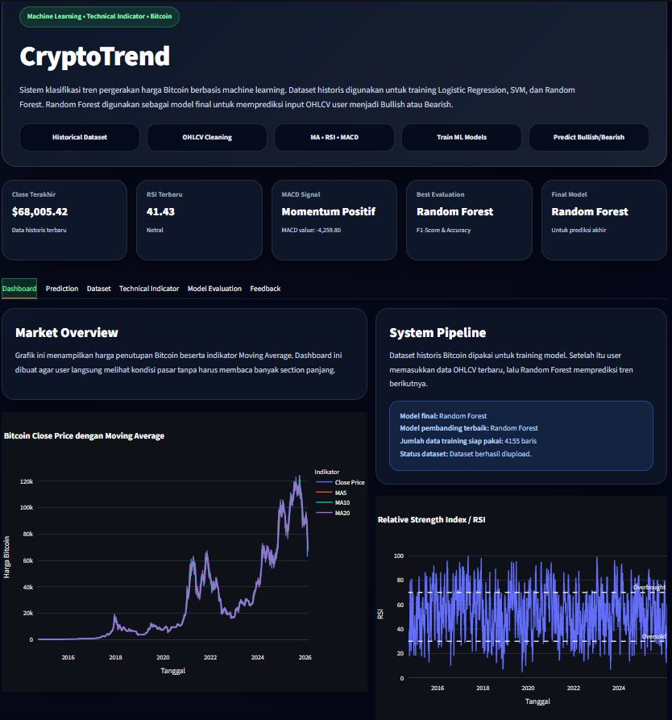

Screenshot pending
/projects/project-crypto.png
01
Cryptocurrency Trend Analysis
Applies machine learning to historical cryptocurrency price data to study market trends.
What I built
- Collected and cleaned historical price data for preprocessing
- Trained and evaluated machine learning models to study price trends
- Used Pandas and NumPy for data handling and analysis